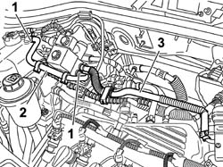

1088D70 cng injection system pressure reduction unit cooling circuit pipe(1) - r r
- Path
- Procedures > 10 ENGINE > 1088 ENGINE COOLING > 1088D COOLANT PIPES AND HOSES > 1088D70 cng injection system pressure reduction unit cooling circuit pipe(1) - r r
- Kind
- repair procedure (removal / refitting; the operation number is the code)
- Applies to
- all engines; all production periods; only with equipment: BIPOWER
- Interactive page
- https://sloeber94.github.io/elrnDB-fDbl/en/#/2584556
Applies to: all engines; all production periods; only with equipment: BIPOWER
 Removing
Removing
 Refitting
RefittingOpen the bonnet lid.
1. Remove the retaining bands on the pressure reducer and the expansion tank.
2. Remove the pipe for the pressure reducer cooling circuit.
3. When working on the other pipe, remove the retaining bands on the pressure reduction unit and throttle body.

Applies to: all engines; all production periods; only with equipment: BIPOWER
Refitting
RemovingFit the pressure reducer cooling circuit and, using new bands, secure it to the expansion tank and to the actual reduction unit.
If the other pipe has been repaired, position it and then secure to the throttle body and pressure reduction unit using new bands.
0010T21 coolant check density and top up if necessary
Close the bonnet lid.